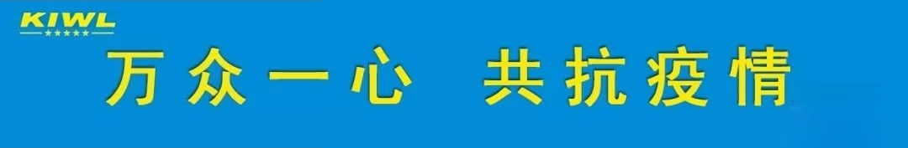
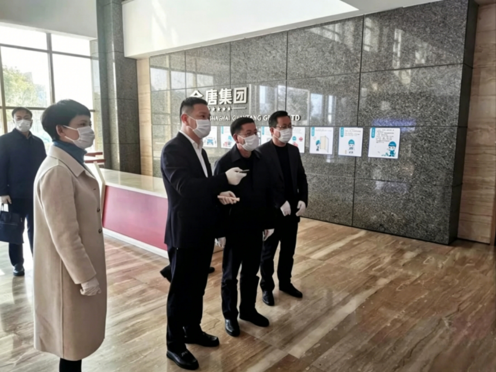

أمين لجنة حي جينشان بمدينة شنغهاي هو ويغو إلى شنغهايKIWL
الاطلاع على وضع الوقاية من الوباء والسيطرة عليه واستئناف الإنتاج

2 27زار هو ويغوو، أمين لجنة الحزب في منطقة جينشان بمدينة شنغهاي، شركة KIWL في شنغهاي للاطلاع على جهود الوقاية من الوباء واستئناف الإنتاج، وتواصل بعمق مع المدير العام جيانغ هونغ لفهم الوضع الحالي وإجراءات المؤسسة. وشارك في الزيارة الأمين لبلدة تشوجينغ لي شيتشوان، ورئيس البلدية شيا هونغمي، ونائب مدير لجنة إدارة المنطقة الصناعية وو يونغبينغ وغيرهم من القادة..
ما نسبة حضور الموظفين لديكم؟ هل إجراءات الوقاية عند استئناف الإنتاج جاهزة بشكل كافٍ؟ ما المشكلات العاجلة التي تحتاجون لحلها؟？
......
استفسر الأمين هو ويغوو ومرافقوه بالتفصيل عن الوقاية من الوباء واستئناف الإنتاج وتطور السوق وغيرها. خلال الزيارة، أبدى الأمين هو“الوقاية من الوباء6S管理”أبدى اعترافًا ببناء النظام، وأشار إلى أن معدل عودة الموظفين إلى العمل بلغ95%أبدى إقراره وإشادته. وأشار إلى أن الوقاية من الوباء والسيطرة عليه هي الأولوية القصوى في العمل الحالي، وينبغي على المؤسسة تحمّل المسؤولية بمبادرة، وعدم التهاون، وتنفيذ جميع متطلبات الوقاية بدقة، لضمان الجمع بين الوقاية واستئناف الإنتاج، وأن تكون كلتا اليدين قويتين..
أعرب مسؤولو الشركة عن شكرهم للحكومات على جميع المستويات على اهتمامها ودعمها المستمر لـ KIWL، وأكدوا أن زيارة الأمين هو ومرافقيه لـ KIWL في شنغهاي جلبت التحية والرعاية، مما منح المؤسسة دفئًا لا حدود له. في هذه الفترة الصعبة، ستواصل KIWL الثقة في التنمية، والتكاتف لتجاوز الصعوبات، والاستفادة من مزاياها، واستئناف الإنتاج بشكل منظم، واستعادة الطاقة الإنتاجية إلى أقصى حد. وتؤمن الشركة أن التعاون بين الحكومة والمؤسسة في مكافحة الوباء سيحقق النصر قريبًا.！



واتساب

امسح الرمز
لتابعنا